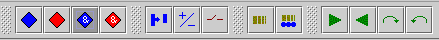
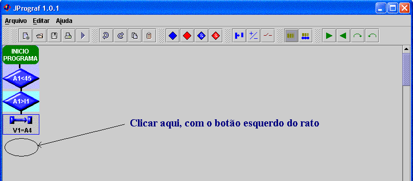
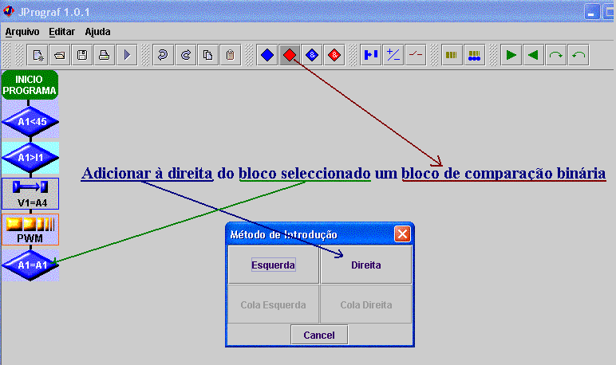

O bloco a adicionar é seleccionado da barra de blocos:

Para adicionar blocos, têm de ser cumpridas as seguintes regras:
1-Um bloco que não seja de comparação só pode ser adicionado se existe um bloco na linha anterior e na mesma coluna. Para tal basta clicar com o botão esquerdo do rato na linha onde se pretende inserir o bloco.

2-Só podem ser adicionados blocos à esquerda ou à direita de um bloco, se este for de comparação e aquele que se pretende adicionar for também de comparação. Para inserir um bloco B à direita de um outro A, clicar no bloco A com o botão direito do rato e seleccionar direita.

Caso já exista um bloco à direita do qual pretende adicionar o bloco, este será adicionado entre os dois.
Se pretende adicionar à direita de um conjunto de blocos de tipo AND, só pode adicionar à direita do primeiro bloco do conjunto.
3-A regra para adicionar à esquerda é em tudo identica à regra 2. Contudo não é permitido adicionar blocos à esquerda se já existir algum bloco à esquerda daquele seleccionado.